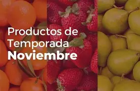

Bienvenidos
Este proyecto muestra la producción y venta de frutas de temporada del municipio de Villa de Allende durante el mes de noviembre.
Aquí podrás consultar información sobre las frutas, sus productores, cosechas y ventas locales.
